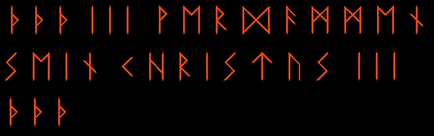
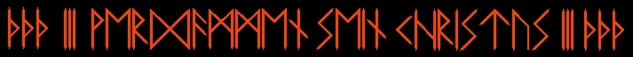
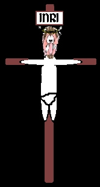
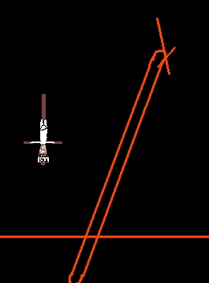
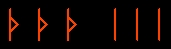

1.

2.

3.

4.

Getting ready:
1. Here is a close up of the script to carve into the pole
2. The letters should be in a straight line on the pole.
3. Paint the  letters on both ends of the inscription red. The other letters do not have to be painted.
4. Make a poppit of the nazarene. Thumb tacks can be used to secure it to the make-shift crucifix. Ice cream sticks can be used or any wood that won't easily split.
5. The finished nazarene with the crucifix should be attached to the end of the pole by pounding a nail through the heart and the crucifix should be upsidedown. The pole is then placed facing the Vatican which is in Rome Italy, in a place where it will not be disturbed.
The ritual:
1.Recite the invocation to Satan:
INVOCATION TO SATAN:
In Nomine
Dei Nostri Satanas, Luciferi Excelsi. In the Name of Satan, Ruler of the Earth,
True God, Almighty and Ineffable, Who hast created man to reflect in Thine own
image and likeness, I invite the Forces of Darkness to bestow their infernal
power upon me. Open the Gates of Hell to come forth to greet me as your
Brother/Sister and friend.
Deliver me O Mighty Satan from all past error and delusion, fill me with truth, wisdom and understanding, keep me strong in my faith and service, that I may abide always in Thee with Praise, Honor and Glory be given Thee forever and ever.
2. Take your Athame, turning counterclockwise at each of the 4 points, Invoke the 4 Crown Princes of Hell:
Satan/Lucifer from the East
Beelzebub from the North
Astaroth
from the West
Azazel from the South
3. Plant the pole securely in the ground.
4. Visualize energy being drawn from the earth into the pole and directed towards the Vatican. Spend 5-15 minutes with this.
5. Stand with your left hand on your hip, elbow bent, legs together and
chant:
th-th-th-oo-oo-oo-ree-ree-ree-zahz three times,
then
eeeeeeee-ssssaahhhh three times,
then chant
fehr-DAH-muhn ZINE KREESS-toos three times.
Recite the Nineteenth Enochian Key in Enochian:
EE-luh-suh • DAY-mohns • Dahss puh-RAHFF • OHD • kuh-HEES mee-kah-OH-luhts • ah-ruh-TAH-bahss DAY • kah-OHS-suh-goh, • DAHSS FEE-feess • bah-luh-ZEE-zuh-rahs DAY • SAY-TAN! • NOH-nuh-kah goh-huh-vuh-LEEM: • mee-KAHM ah-DOH-ee-ahn • DAY • SAY-TAN, ah-kuh-ROH-ohd-zee • buh-lee-OH-ruhb, ZOH-bah • oh-oh-AH-oh-nah • kuh-HEES loo-SEEF-tee-ahs • ah-oh-EE-VEE-ah-ee; DAHSS • ah-buh-RAH-AH-sah NOH-nuh-kuhf • nay-tah-AH-eeb kah-OHS-sah-jzhee, • OHD • TEE-luhb DAH-muh-puh-lohts, • toh-OH-aht NOH-nuh-kuhf • GAH • mee-KAH-luhts OH-mah, • luh-RAH-zuhd TOH-luh-guh-loh • MAH-ruhb YAH-ruh-ruh-ee • DAY • TOHKS BOH-guh-pah • ahks-EE-ah-ee-ahl LOH-nuh-doh • bah-BAH-jzhay • OHD toh-ruh-ZOO-luhp • ah-kuh-ROH-ohd-zee, goh-HOH-luh: • kuh-OHS-suh-gah, tah-bah-OH-ruhd • zah-ah-NEE-ruh. ay-luh-ZAHP • TEE-luhb, • PAH-ruhm JZHEE • kuh-VAH-sah-hee, • OHD TAH • KUH-vuh-ruh-luh-suh-tuh boh-OH-ah-pees • SAY-TAN. LUH • NEE-muhb, • OH-vuh-kuh-hoh ZEE-muhp; • OHD kuh-REE-suh-tay-ohs AH-jzh • LUH • toh-luh-TOH-ruhn pah-RAH-kuh • AH • ZEE-muhp. kuh-ROH-ohd-zee, • DOH-duh-pahl OHD • FEE-fah-luhz • LUH suh-muh-NAHD; • OHD • FAH-ruh-guht, AH • VAH-vuhl • DAY • FAH-fayn DAY • jah-HOH-vah • OHD ah-VAH-vohks, • TOH-nuh-vuhjzh. OH-ruh-suh-kah DAY • EE-dee-goh, noh-AH-suh-mee • tah-buh-JZHAY-suh LAY-vee-tuh-huh-MOH-nuhjzh; mah-duh-REED • tah-REE-ahn • OH-mahn. BAH-guh-lay? • moh-OH-oh-ah • KAH-HAN. NOH-ray • OHD • PAHSS-uh-buhs DAY • SAY-TAN, • TOH-ruht-soo! puh-REE-ahts • ah-DOH-hee • DAY mah-duh-REE-ahks, • ah-boh-AH-puh-ree. tah-bah-OH-ree • puh-REE-ahts • AH-ruh tah-BAHSS; • ah-duh-ruh-PAHN • KOH-ruhz TAH • DOH-beeks; • ee-OH-luh-kahm bah-LEET • OHD • kuh-VAH-suhb kuh-TEE-nujzh. • REE-pee-ruh pah-AH-ohks-tuh • ZAH-gah KOH-ruh; • vuh-MAHL • OHD puh-ruh-duh-ZAH-ruh, • KAH-kuh-rahjzh ah-oh-EE-VEE-ah-ee • KOH-ruh-muhp. TOH-ruht-soo, • ZAH-kahr! • ZAH-mah-rahn AH-suh-puht • SAY-TAN! • ZOO-ruh-jzhahs TEE-ah • BAH-luh-tahn; • OH-doh KEE-kah-lay • KAH-AH-AH, • OHD oh-ZAH-tsuh-mah • puh-LAH-puh-lee voh-OH-ahn.
Close with a HAIL SATAN!! Turning clockwise.
________________________________________________
About the ritual:
It is advisable that one has already performed the
dedication before performing this ritual. This ritual is extremely powerful.
The ritual is based upon what is called a "niding pole." Centuries ago,
people in the Northlands raised niding poles against the invading xian clerics
and missionaries. The pole acts as a magnet for earth energies that are used to
continually deliver curses at the selected victim.
Runes are of the most
ancient symbols and have incredible power. The runic symbols can be seen in
Ancient Phoenician letters which are based upon the constellations. The TH runes
destroy the spirit and the I runes bind the destruction.
This ritual can also be used to vent at local churches and xians. Do *not* place the pole on church property, though as this is illegal. It is best if the pole is in view of the home or building of the recipient of the intended curse, but not necessary. Just make sure it is in an isolated and secure area where it will not be disturbed.
© Copyright 2005, Joy of Satan Ministries;
Library of Congress
Number: 12-16457